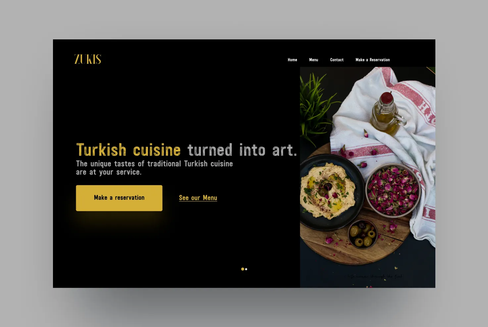
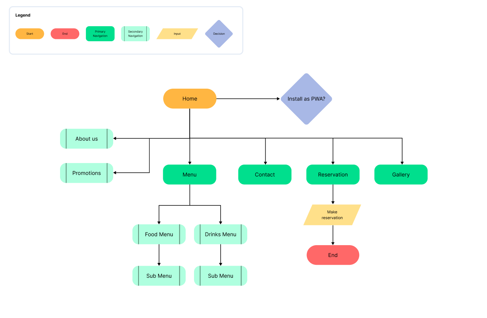
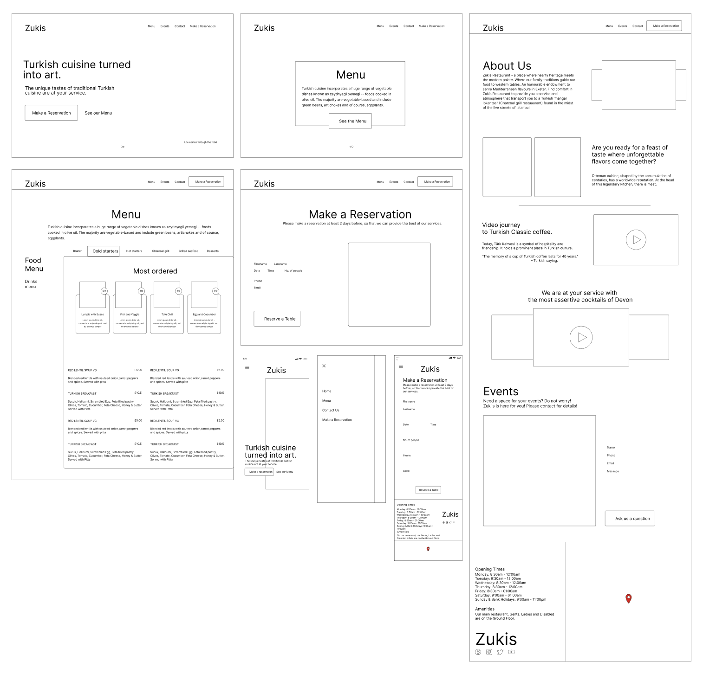
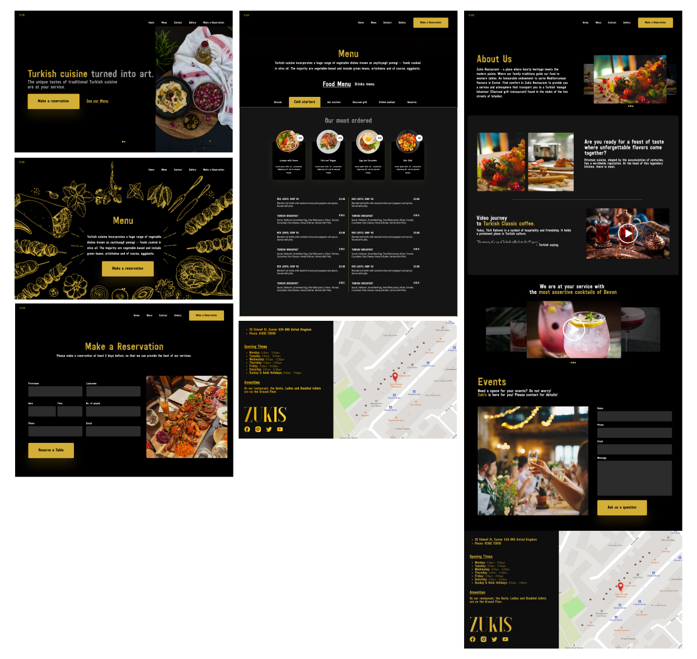

The unique tastes of traditional Turkish cuisine, delivered through a full-stack design and development project completed in 3 weeks. Top 2 on Google within weeks of launch.

Overview
Zukis needed a complete digital presence, designed, built, and launched within three weeks. The brief called for a site that captured the warmth and authenticity of traditional Turkish cuisine while ranking on Google for local searches.
Project goals
Research
A competitive analysis of 5 restaurant sites revealed the gaps. I selected 5 top-performing restaurants based on search rankings and user reviews. Key differentiators for Zukis: mobile-first design, SEO excellence, and an enhanced reservation system using Firebase.
UX Design Process
Since faster loading times and a simple interface were a priority, I designed Zukis as a single-page application. The IA focused on the five key sections users care about: Home, Menu, Reservation, Gallery, and Contact.

I created low-fidelity wireframes in Figma for all main pages: Home, Menu, Make a Reservation, About Us, Events, and Contact, iterating based on team feedback and usability principles.

The dark gold design system evoked the warmth of Turkish hospitality. High-quality food photography, clear menu navigation, and a prominent reservation CTA were the three pillars of the final design.

Design decisions
Development
The site was built in React JS with Firebase for backend infrastructure. Twilio SendGrid handled automated email confirmations. Microsoft Clarity and Google Analytics provided behavioural and performance tracking from day one.
Frontend
React JS with responsive, component-based architecture for fast iteration
Backend
Firebase with real-time database, Cloud Functions, and security rules
Email automation
Twilio SendGrid for booking confirmations and marketing sequences
Analytics
Google Analytics + Microsoft Clarity for heatmaps and session recordings
Results
Within weeks of launch, Zukis secured a top-two Google ranking for local Turkish restaurant searches, driven by clean semantic markup, structured data, and a fast-loading mobile-first codebase. Higher visibility translated directly to increased foot traffic and reservations.
Delivering a full-stack product in three weeks required making sharp prioritisation calls early. The PWA integration, real-time Firebase reservations, and SEO strategy all pulled in the same direction: give users an experience so fast and frictionless that choosing Zukis over a competitor felt like the obvious move.
Key takeaways